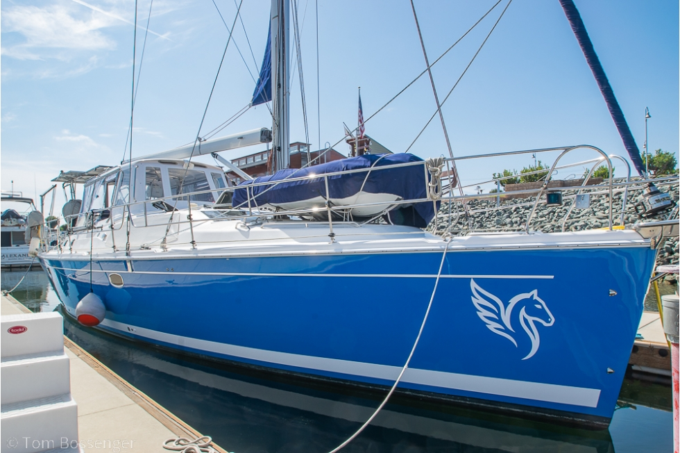
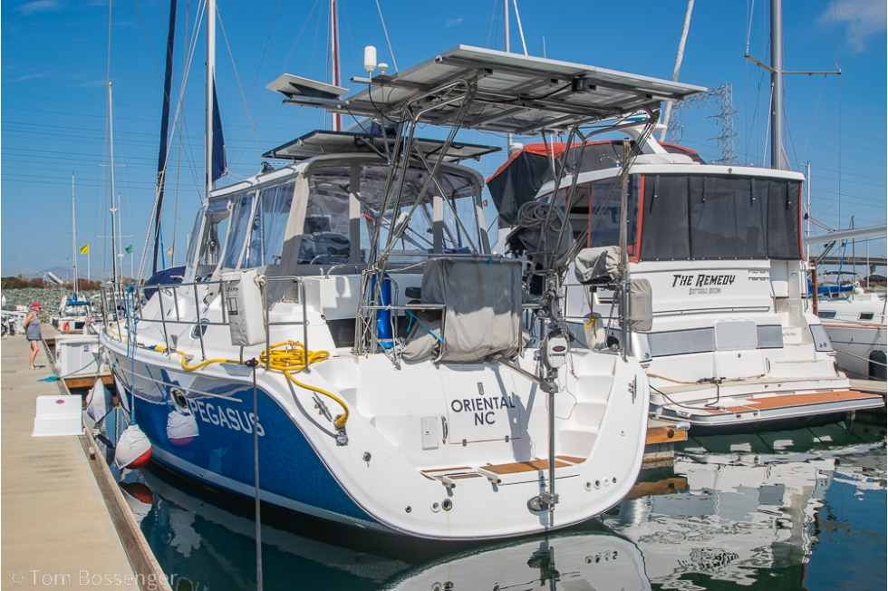
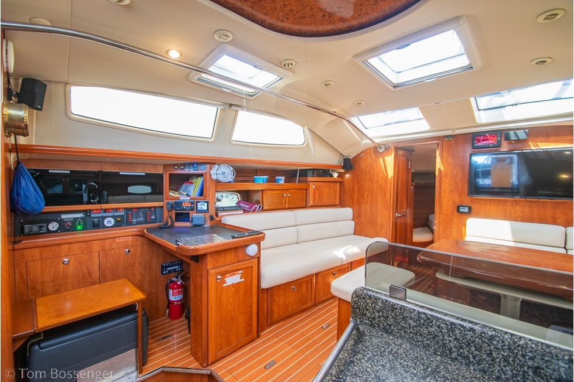
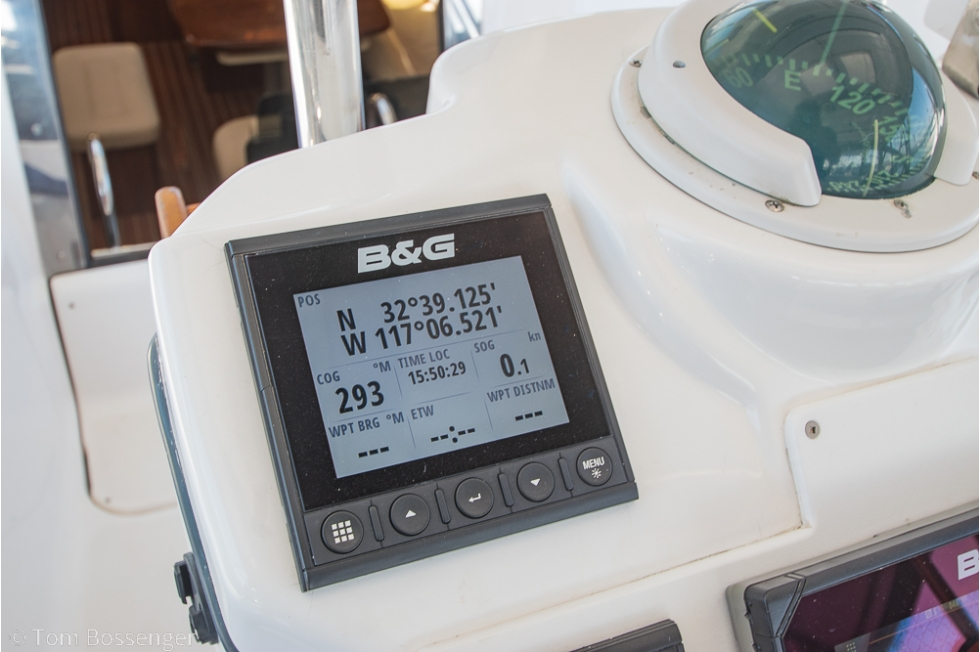
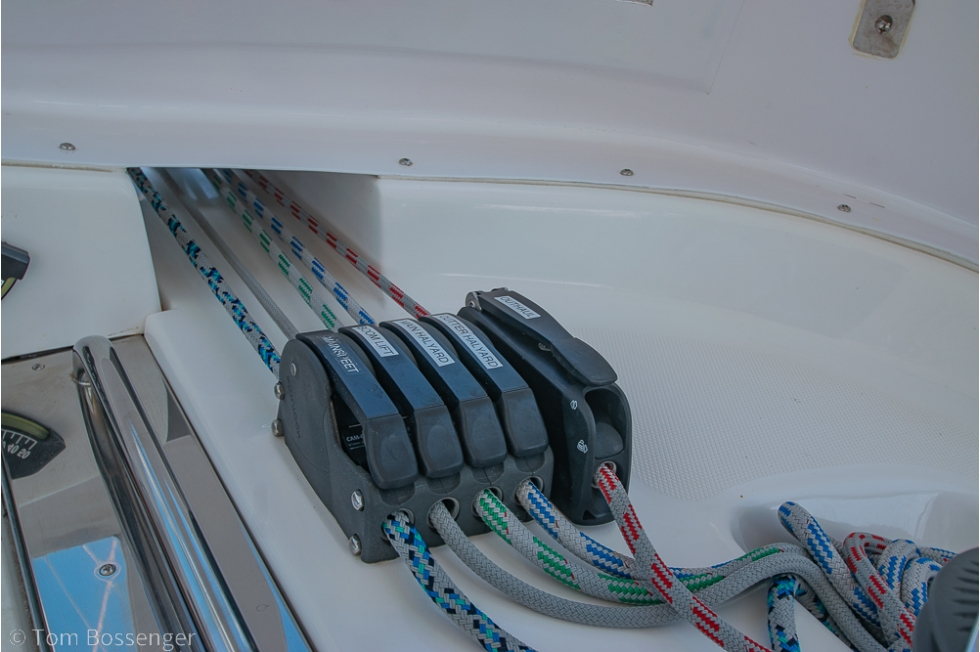
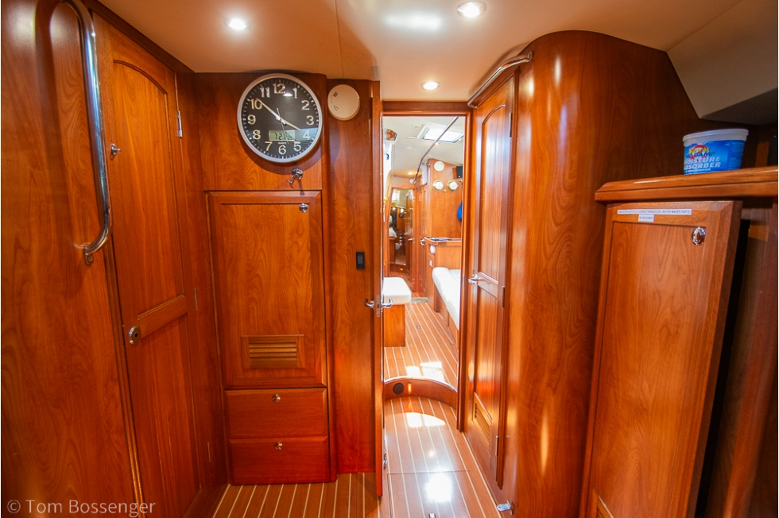

196
Displacement / length
36,945 lb on a 43.83 ft waterline. A moderate cruising hull. Heavier than the aft-cockpit Hunter 50, which publishes about 32,800 lb and a D/L near 174.
2009 Hunter 50 Center Cockpit · San Diego · Just listed
A commissioned center-cockpit cruiser in Awlgrip Marlin Blue.
Planning all-in loads with the page.
The boat
Pegasus is a 2009 Hunter 50 Center Cockpit offered by California Yacht Sales on Harbor Island in San Diego. Hunter Marine built her in Alachua, Florida, to the in-house design that followed the Hunter 49. The center cockpit buys a private aft cabin. The B&R rig, with swept spreaders and no backstay, is the factory answer to short-handed sail handling.
The ask is $249,000. The refit that usually eats the next owner’s first year is largely already aboard.
From 2017 through 2025 the owner rebuilt the energy system, the sail inventory, the standing rigging, the ground tackle, the sanitation, and the cockpit shelter. In January 2026 the hull was sprayed in Awlgrip Marlin Blue and the bottom was painted. A prior advertisement of this same boat said the owners had sailed her into the Pacific and along the Mexican coast. The transom is still lettered Oriental, North Carolina. A B&G screen in the listing photos is showing a San Diego harbor position.
She sleeps six in two cabins, with a queen island berth aft, a forward cabin, and a saloon settee. Both heads have been re-hosed. The saloon has a proper navigation station. Headroom on the class is published at 6 ft 8 in.
Class design · Listings Port and the builder
These are published class numbers for the shoal-draft Hunter 50 CC, the keel the listing’s draft field describes. They are not measurements taken off Pegasus. D/L, sail area/displacement on the 100% triangle, ballast ratio, capsize screening, and hull speed match the Listings Port sheet to the tenth. Comfort ratio is theirs as published.
36,945 lb on a 43.83 ft waterline. A moderate cruising hull. Heavier than the aft-cockpit Hunter 50, which publishes about 32,800 lb and a D/L near 174.
On 1,013 sq ft, the 100% foretriangle plus main triangle. The furling vertical-batten sail plan publishes 1,131 sq ft, which lifts the ratio to about 16.3. This rig is meant to be reefed and furled by a small crew.
12,500 lb of lead in the shoal wing. The deep option is 11,216 lb at 7 ft 0 in, and that keel is the lighter boat: 35,661 lb.
Beam 14.75 ft over the cube root of displacement in cubic feet. Under the common 2.0 screen. The deep-keel boat calculates about 1.79 because she is lighter.
Listings Port’s figure for the shoal class boat. In Brewer’s bands, the mid-30s describe a boat with passage-making manners rather than a light daysailer.
1.34 × √LWL. A theoretical displacement speed, not a measured passage. A 2024 ad for this hull claimed about 8 knots under the 110 hp Yanmar.
95 photographs · Tom Bossenger for California Yacht Sales






As listed, 2017–2026 work called out
Four 300 Ah Victron LiFePO4 batteries, 1,200 Ah, with a Victron BMS, a 712 monitor, and a 6-inch display. At 12.8 volts that is about 15 kWh before the BMS reserve. A 12-to-12 charger feeds the start battery, replaced the year of the listing. The bow thruster has its own pair of 12 V AGMs and a Sterling 12-to-24 charger.
Two Victron MultiPlus 3,000 W units make 240 V for the air conditioning and the water heater. A separate 30 A input feeds a Victron 70 A charger that accepts 100–230 V, so shore power abroad does not require rewiring. About 1,600 W of solar through three Victron MPPTs.
Cruise RO watermaker, sized to run from the bank and the sun. Three refrigerator/freezer systems. The 50-gallon water heater was removed and that volume became a 55-gallon diesel tank, which is why fuel is 215 gallons against the class standard of 162. A new 11-gallon water heater replaced it. Water tanks are still listed at 194 gallons. Holding is 52 gallons in two tanks.
Side by side
| This boat, as listed | |
|---|---|
| Name | Pegasus |
| Year, builder, model | 2009 Hunter 50 Center Cockpit |
| Ask | $249,000, just listed, US waters |
| Where she is | San Diego, California. Transom reads Oriental, NC |
| LOA / beam / draft | 49 ft 11 in / 14 ft 9 in / 5 ft 6 in |
| Dry weight on the listing | 35,661 lb. That is the deep-keel class figure |
| Engine | Yanmar 4JH4-HTE, 110 hp, 2,328 hours |
| Fuel / water / holding | 215 / 194 / 52 gal |
| Cabins / berths / sleeps / heads | 2 / 2 / 6 / 2 |
| Hull | Fiberglass monohull. Color field blank. Paint is Marlin Blue |
| Hunter 50 CC class | Shoal |
|---|---|
| Designer, first year | Hunter Design Team, 2009, Alachua |
| LOA / LOD / LWL | 49.92 / 47.83 / 43.83 ft |
| Beam | 14.75 ft |
| Draft, shoal / deep | 5 ft 6 in / 7 ft 0 in |
| Displacement, shoal / deep | 36,945 / 35,661 lb |
| Ballast, shoal / deep | 12,500 lb lead / 11,216 lb lead |
| Fuel, standard / optional | 162 / 229 gal. This hull lists 215 |
| Water / holding | 194 / 52 gal |
| 100% sail area | 1,013 sq ft |
| Mast height, standard | 63 ft 4 in. Tall furling rig 68 ft 6 in |
| Headroom, class | 6 ft 8 in. Aft berth 5 ft 9 in × 6 ft 8 in |
| LWL / LOA | 87.8% |
Listings Port · Hunter 50 CC · twelve months
Listings Port was tracking 20 Hunter 50 CC listings over twelve months, three quarters of them in the United States and a quarter in Spain. The median ask was $254,000. The three-month trend against that median was −1.6%.
Pegasus at $249,000 is the July 2026 print in that series, and it is $5,000 under the twelve-month median. The boats that make up a median ask of $254,000 are not, as a group, carrying 1,200 amp-hours of lithium, a fresh Awlgrip hull, and a 30 gallon-per-hour watermaker. The hours are the offset. A just-listed boat with unpublished engine history can be negotiated. A just-listed boat whose hours are on the page, and whose refit is this specific, has less reason to open far under the ask.
Monthly median asks and listing counts from Listings Port: Aug 25 one boat, Sep 25 one, Jan 26 three, Apr 26 five, May 26 two, Jul 26 one, Aug 26 five, Sep 26 four.
TRU all-in method · editable
The blocks match the TRU Tools All-In Calculator, version 2.1: price, purchase costs, refit low and high, and a pile of gold. Refit lines are reserves. The systems in the inventory above are not priced again here. Insurance defaults to 2% of the price in use. Tax defaults to 7.75%, the San Diego combined rate on the CDTFA schedule effective 1 October 2026. California does not cap boat tax the way Florida caps it at $18,000. Uncheck the tax line to model a removal. This is planning arithmetic, not tax advice, and not an offer.
The $400,000 cash figure is the planning cap from the companion TRU workbooks. It is an input, not a fact about this boat.
Survey is about $48 a foot. The haul is for the survey. The bottom was painted in January 2026. Travel is two people to San Diego. Set it to zero if you are already here. Delivery stays zero because she is already on this coast. The high case adds $1,500 of travel for a second trip.
The three cards move the closing price. This screen holds one price and lets the reserve move from low to high, which is how the TRU calculator totals a file.
The download is a version 2.1 file. In the TRU All-In Calculator, use Import and choose the .tru. Categories match that tool: Anchor, Cabin, Dinghy, Elec, Energy, Hull, Mech, Nav, Prop, Rigging, Safety, Sails, Other.
Before a ticket to Harbor Island
California Yacht Sales · Harbor Island
The listing broker. Widely known as the Barefoot Broker. Office at 2040 Harbor Island Drive, San Diego, California 92101. Direct 619-990-8501. Office 619-295-9669. info@californiayachtsales.com.
Original listing · Broker profile · Hunter 50 CC on Listings Port